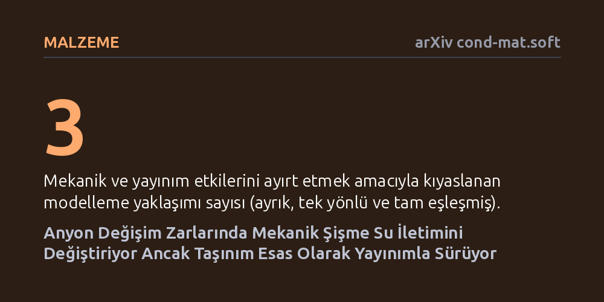

MALZEME · arXiv cond-mat.soft · 2026-10-17
Araştırmacılar, karbondioksit yakalamada kullanılan anyon değişim zarlarında su geçişi ile mekanik şişmenin birbirini nasıl etkilediğini simülasyonla inceledi. Mekanik gerilmenin su iletim davranışını değiştirdiği fakat sürecin ağırlıkla yayınımla sürdüğü ve modelin özellikle orta nemde deneysel verilerle örtüştüğü görüldü.
Karbondioksit yakalama sistemlerindeki zarlar modellenirken sadece kimyasal geçirgenliğin değil, zarın su alıp şişmesinden kaynaklanan mekanik gerilimlerin de hesaba katılması gerektiğini gösterir.

Karbondioksit yakalama ve gaz ayrıştırma teknolojilerinde anyon değişim zarları kilit bir rol oynar. Bu zarların performansı büyük oranda suyun zar yapısı içindeki hareketine bağlıdır; çünkü gaz ayrıştırma süreci nemle kolaylaştırılan bir taşınım mekanizmasına dayanır. Ancak zar ortamdan nem aldıkça sadece suyu iletmekle kalmaz, aynı zamanda sünger gibi şişer ve belirgin iç gerilmelere maruz kalır.
Geleneksel mühendislik modellerinde suyun geçişi ile zarın fiziksel deformasyonu çoğunlukla birbirinden bağımsız süreçler olarak ele alınıyordu. Oysa zarın yerel olarak şişmesi ve geometrisinin değişmesi, suyun hangi hızla ve yönde taşınacağını doğrudan etkileyebilir. Bu iki yönlü mekanik ve kimyasal etkileşimin doğru modellenmesi, hem zarın kullanım ömrünü öngörmek hem de karbon yakalama verimini artırmak açısından kritik bir gerekliliktir.
Araştırmacılar, bu karmaşık çift yönlü etkileşimi anlamak için ticari olarak yaygın kullanılan Fumasep FAA-3-50 anyon değişim zarına odaklandı. Su taşınımı ile polimer malzemenin mekanik davranışını eşzamanlı olarak hesaplayan zamana bağlı bir sonlu elemanlar modeli geliştirdiler. Bu modelleme çatısı; su konsantrasyonuna bağlı yayınım katsayısını, nem kaynaklı şişmeyi ve polimer ağının doğrusal olmayan viskoelastik (zamana bağlı esnek) tepkisini bütünleşik biçimde içerir.
Mekanik etkilerin su iletimine katkısını net biçimde ayrıştırabilmek için üç farklı formülasyon karşılaştırıldı: mekanik etkilerin hesaba katılmadığı ayrık model, deformasyonun yalnızca su miktarından etkilendiği tek yönlü model ve su ile mekaniğin birbirini karşılıklı beslediği tam eşleşmiş model. Geliştirilen tam eşleşmiş simülasyon, zarın iki yüzeyi arasındaki farklı su aktivitesi gradyanlarında ölçülen kararlı durum deneysel verileriyle kıyaslanarak doğrulandı.
Simülasyon sonuçları, zar içindeki su konsantrasyonunun zamana ve konuma bağlı olarak dalgalandığını, dolayısıyla şişme ve mekanik deformasyonun da homojen olmadığını ortaya koydu. Tam eşleşmiş modelde, oluşan iç mekanik basınç ve değişen zar geometrisi su iletim tepkisini belirgin şekilde modifiye etti. Ancak mekanik geri beslemenin yarattığı bu farklara rağmen, suyun zar içindeki temel taşınım mekanizmasının ağırlıklı olarak yoğunluk farkına dayalı yayınım (difüzyon) ile gerçekleştiği anlaşıldı.
Modelin deneysel ölçümlerle doğrulanması, simülasyonun neme bağlı su iletim değişimini başarıyla yakaladığını gösterdi. Özellikle orta düzey nem koşullarında model ile deneyler arasında son derece güçlü bir uyum gözlendi. Düşük ve çok yüksek nem seviyelerinde ise polimer ağının karmaşık yapısı nedeniyle model ile deney arasındaki farkın bir miktar arttığı belirlendi.
Elde edilen sonuçlar, nem destekli gaz ayrıştırma sistemlerinde kullanılan polimer zarların tasarımında mekanik gerilmelerin göz ardı edilmemesi gerektiğini kanıtlıyor. Zarların sürekli nem dalgalanmalarına maruz kaldığı endüstriyel karbondioksit ayrıştırma operasyonlarında, sadece kimyasal geçirgenliğe odaklanan modeller eksik veya yanıltıcı öngörüler üretebilir.
Bu çalışma, yeni nesil dayanıklı zarların geliştirilmesinde sayısal bir test ortamı sunarak tasarım süreçlerini hızlandırabilir. Zarın mekanik deformasyonunu ve şişme profilini doğru hesaplamak, hem malzemenin erken aşınmasını ve yırtılmasını önlemeye hem de sürekli karbon yakalama süreçlerinde enerji verimliliğini optimize etmeye katkı sağlayacaktır.